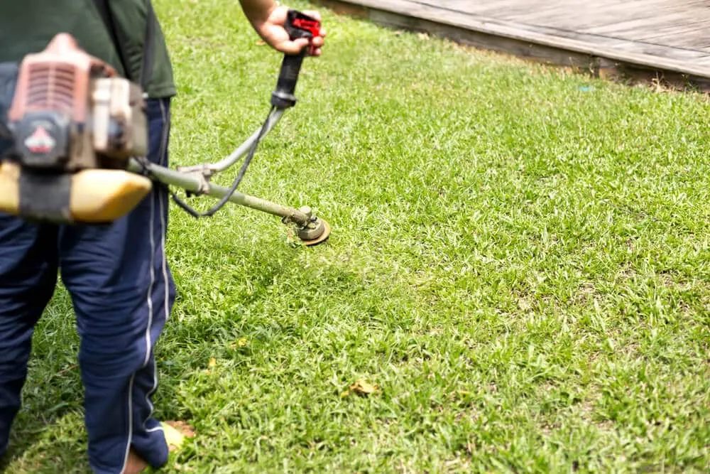

Table of Contents
- Why Control Weeds for Lawn Health?
- Identify Common Lawn Weeds
- Effective Weed Control Methods
- Herbicide Types and Application
- Keep Your Lawns Healthy By Eliminating Weeds All Year Round
While developing a healthier grass, taking the approach of managing invasive plants by infusing the culture and physical means of controlling them, by the pre-emergent herbicide application, hand physical removal, or frequent mowing of the yard, is invaluable because this, along with suitable fertilization and aeration, can not only offer a truly well-populated grass cover but will simultaneously help manage the weeds too.
Using our techniques and methods at Big Easy Lawn Care will provide a constant green, lush lawn that will most likely garner the desired monthly lawn of the month award.
Why Control Weeds for Lawn Health?
Without control, weeds can overtake your lawn and create a patch of bare ground. Proper weed control adds life to your outdoor look without taxing the soil. Dandelions and other broadleaf weeds are fast colonizers that inhibit grass development. Use pre-emergents to prevent the weed seeds from germinating and post-emergents to control those already sprouting. In this way, we contribute to the growth of a healthy lawn.
Regular mowing at the right height, followed by the application of the right fertilizer, will do the trick for building a thicker, healthier lawn.
Identify Common Lawn Weeds
Before you can effectively manage weeds in your lawn, it’s important to know which types you’re dealing with. Common lawn weeds come in various shapes and sizes, and they can spread quickly if not controlled.
Here are some of the most common weeds you’re likely to encounter:
Heat and humidity make New Orleans lawns especially prone to fungus and weeds. We diagnose and treat these problems with our Gulf climate in mind, before they spread.

- Dandelions: Recognized by their bright yellow flowers, dandelions are resilient weeds with deep roots. They spread through seeds carried by the wind, making them a frequent sight in many lawns.
- Crabgrass: This fast-growing weed thrives in bare or thin lawn areas. Its low, sprawling growth pattern can quickly take over if left unchecked.
- Clover: Clover has small, three-lobed leaves and can spread rapidly. While some homeowners like its look, clover can compete with your grass for nutrients.
- Chickweed: With small white flowers and creeping stems, chickweed grows close to the ground and forms dense mats that can smother your grass.
- Broadleaf Plantain: This weed has wide, flat leaves and grows in clusters. It often appears in compacted soil and can quickly spread across your lawn.
- Nutsedge: Often mistaken for grass, nutsedge is taller and grows faster than lawn grass. It’s challenging to manage because it reproduces through underground tubers.
- Thistle: Known for its sharp, spiky leaves, thistle can be painful to touch and is challenging to remove due to its deep root system.
By identifying these common weeds, you’ll know what you’re up against and can take the right steps to manage them. Regularly inspecting your lawn for these invaders is key to keeping your grass healthy and weed-free.
Effective Weed Control Methods
Maintaining your lawn involves managing weeds before they compete for nutrients, water, and sunlight. Effective weed control requires a multi-faceted approach for a dense, healthy lawn.
Cultural Practices
Improve the competitiveness of the lawn, allowing it to outgrow the weeds naturally. Mow to the recommended height to limit seed production, and to fit the optimal density of grass. Water thoroughly, providing 1 to 1.5 inches of water per week. Fertilize based on a soil test to maintain optimum nutrient levels, supporting healthy grass that can overcome weed threats.
Mechanical Removal
Physically remove weeds whenever practical, especially in small problem areas. Hand-pulling weeds is the best option if performed when soil moisture is present to help remove the roots. The use of tools like weeding forks can help with more challenging weeds. Aerating routinely will also improve the soil health of the grass and limit weeds.
Herbicide Selection
Use herbicides that are appropriate for your situation. Selective herbicides work to kill the targeted weed, but not the grass, while non-selective herbicides work for spot treatment. Always verify the herbicide is appropriate for your grass type.
Pre-emergent Herbicides
Pre-emergent herbicides are applied in the early spring and in the fall to prevent seeds from germinating into weeds. Timing is important when applying to regulate crabgrass-specifically, specifically when the soil drops below 55 degrees Fahrenheit.
Post-Emergent Herbicides
Post-emergent herbicides should be applied after weeds have started to grow and applied only to weeds you can see. Applications should be done when the air is calm and the surfaces are dry. Again, consult the label for effectiveness and safety.
Staying Away from Chemicals
You may choose to consider non-pesticide alternatives, such as mulching bare areas with straw or chips for weed control. Hot water or vinegar can assist in removing weeds from driveways, and ground covers such as clover can assist with reducing the re-emergence of weeds.
Herbicide Types and Application
When it comes to managing weeds effectively, herbicides can be a helpful tool alongside regular mowing. Choosing the right type of herbicide and applying it correctly can make a big difference in keeping your lawn healthy.
Types of Herbicides
- Pre-Emergent Herbicides: These herbicides stop weeds before they even sprout. They are best applied early in the season, usually in spring, to prevent common weeds like crabgrass from growing.
- Post-Emergent Herbicides: These are used to kill weeds that have already grown. They work well on broadleaf weeds, such as dandelions and clovers, and are usually applied directly to the unwanted plants.
- Selective Herbicides: Selective herbicides target specific types of weeds without harming your grass. This is a great option if you want to protect your lawn while tackling the problem.
- Non-Selective Herbicides: These herbicides kill any plant they come into contact with, including your grass. Use them only in areas where you want to remove all vegetation, like driveways or sidewalks.
Tips for Proper Application
- Read the Label: Always follow the manufacturer’s instructions to ensure safe and effective use.
- Choose the Right Weather: Apply herbicides on a dry, calm day to avoid runoff or drift.
- Spot Treatment: For isolated weed patches, focus the herbicide on those areas instead of treating the entire lawn.
- Watering After Application: Some herbicides need watering to activate them, while others require dry conditions. Check the label for specific instructions.
- Safety First: Wear gloves and protective clothing when applying herbicides to protect yourself and the environment.
By using the right herbicide and applying it carefully, you can complement your regular weed-cutting routine and keep your lawn looking its best.
Keep Your Lawns Healthy By Eliminating Weeds All Year Round
We’re committed to helping you adopt weed control practices that support a healthy lawn you can take pride in. Contact us today at Big Easy Lawn Care to experience the superior difference.